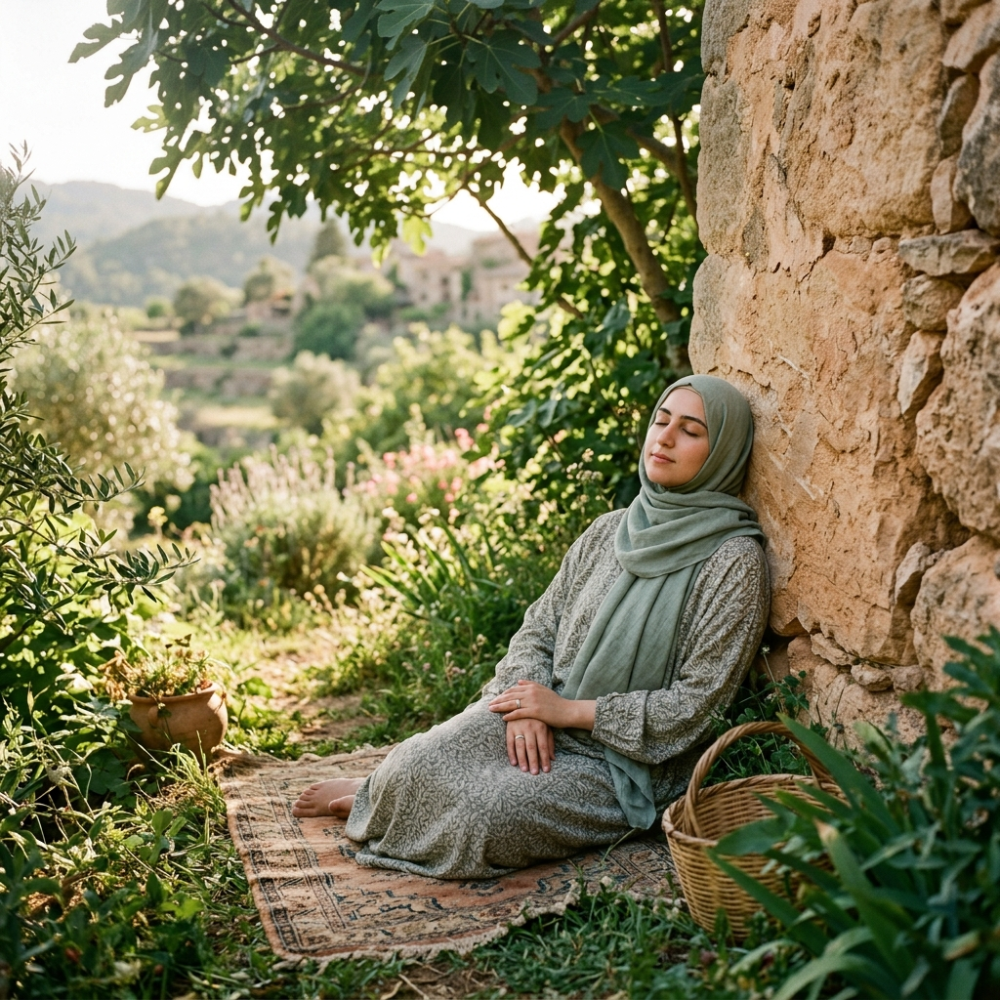

لحظة تأمل اليوم
١٠:٠٠ م
أبطئ من خطاي لأستمع إلى تفتح الزهور وأشعر باللمسة اللطيفة للنسيم المداعب لروحي.
استخدم خاطرة اليوم لاتخاذ خطوة صغيرة، أو تأمل فكرة واكتبها:

أين يكمن جمال هذا العالم المليء بالسلام؟
مزاج اليوم: